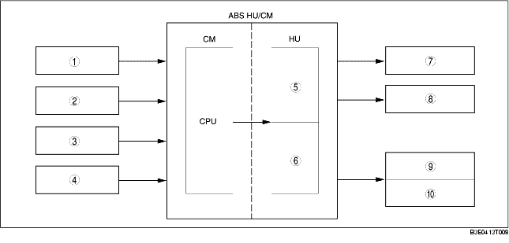

• ABS control occurs when wheel slip is determined by the ABS CM (based on the four ABS wheel-speed sensors). Then, the ABS HU inlet and outlet solenoid valves are operated and brake fluid pressure is controlled accordingly to prevent wheel lock-up.
• Use of ABS control during emergency braking or on slippery road surfaces allows directional stability to be maintained, steerability ensured and stopping distance to be reduced.
• The ABS control system has independent front wheel control and unified control (select low) for the rear wheels.

.